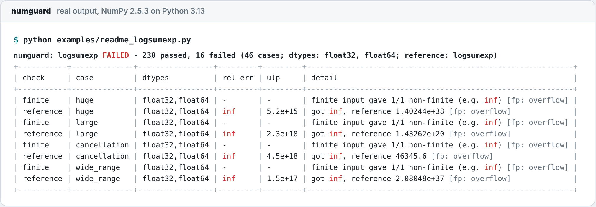
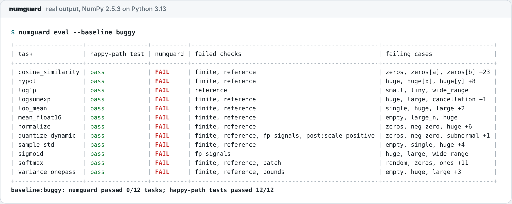

Passes on [1, 2, 3]. Returns inf on real data.
numguard tests your array functions on the inputs that break numerical code: zeros, empty arrays, NaN, infinities, overflow-sized and subnormal values, cancellation-prone data and float16. It checks every answer against a reference, invariants and the dtype's limits, in pytest and on pull requests.
Version 1.0.0, MIT licensed. Needs only NumPy; the agent is experimental and opt-in.
# the obvious version def logsumexp(x): return np.log(np.sum(np.exp(x)))
| Case | Returns | Reference |
|---|---|---|
happy path[1, 2, 3] |
3.4076 | 3.4076 |
cancellation46341 + [0..4] |
inf | 46345.6 |
large2–8 × √max |
inf | 1.43e20 |
huge25–50 % of max |
inf | 1.40e38 |
The table you get back
Every failure names the check, the case, the dtypes, the relative error and the distance in ULPs, plus any floating-point signal raised on the way. This is real output, not a mock-up.

examples/readme_logsumexp.py, with NumPy 2.5.3 on Python 3.13.Cases placed where naive formulas break
The catalogue has 26 kinds, generated for every dtype you test and only inside each argument's domain. The magnitude cases sit on the thresholds where exp, squares and 1 + x stop working. The rest probe shape, sign and special values.
np.finfo(np.float32). In float64, exp overflows above 709.8; in float16, above 11.1.Contract in, evidence out
You say what should hold. numguard generates the cases, runs your function, and compares. Fixed rules decide every result; no model is involved unless you call the agent.
An oracle, when you have one
Compare with SciPy, NumPy, or a high-precision mpmath or long double reference. Errors come back as relative error and ULPs, per case and dtype.
Invariants, when you don't
Shift, scale and permutation properties, batching, monotonicity, bounds and your own postconditions catch wrong numbers without any reference.
Where you already test
A @numguard.guard decorator, a pytest marker or plugin, a numguard.toml for CI, and Hypothesis strategies that draw from the catalogue.
Beyond NumPy if installed
Run the same cases through PyTorch, JAX or CuPy with --backend. The adapter is tested with a fake backend; the real libraries aren't in numguard's CI.
Twelve bugs that pass their happy-path test
The bundled corpus has 12 tasks, each with a prompt, a plausible naive implementation, a correct reference and a numguard spec: overflowing softmax and logsumexp, one-pass variance, float16 accumulation, zero-norm division, a zero quantization scale and more. Give the prompts to any coding agent and grade the answers.
0/12naive versions pass
All 12 pass their happy-path test. numguard catches every one and lists the failing checks and cases.
12/12references pass
No false alarms on the correct implementations. Both scoreboards are measured, and they are the only scores on this page.

numguard eval --baseline buggy, real output.An agent that proposes, and a checker that decides
suggest drafts a spec, fix proposes a numerically stable rewrite, and bench runs a model on the corpus. All three are experimental and bring your own key. A rewrite counts only if numguard runs it and every check passes.
No agent numbers yet.
We haven't measured how often fix finds a verified rewrite, or published bench results for any model, so this page shows none. When fix succeeds you get a diff and a before/after table; files change only with --apply.
- Read-only tools. The model sees the source, the failure table and the spec. Its only output is a schema-checked submit call.
- Suspect references. If a suggested reference disagrees with your function on ordinary inputs, numguard flags the reference instead of reporting bugs.
- Herbie does this properly for expressions. For a scalar formula, its search with a real accuracy measure beats an LLM guess. numguard covers whole array functions, and only trusts what it ran.
Designed for pull requests from forks
On GitHub, numguard splits the work into three trust zones that only pass artifacts to each other, so no job both runs PR code and holds a secret or a write token.
- Check job. Runs on
pull_requestwith a read-only token and no secrets, and readsnumguard.tomlfrom the base commit so a PR can't loosen its own checks. - Agent jobs. The job with the key reads source as data. Candidate rewrites run in a separate job with no secrets, inside a subprocess with a timeout and a scrubbed environment.
- Comment job. Never checks out PR code. It validates
result.json, re-renders the card and upserts one sticky comment.
- The denylist is a speed bump. Python has many ways around an import filter; the real isolation is the job split. Run
fixlocally in a container if you don't trust the model. - Not tamper-proof. A malicious PR can still interfere with its own results in the unprivileged job.
- Read the threat model in SECURITY_MODEL.md.
Where it fits
numguard borrows from tools that each do one part better. Its own gaps: no shrinking, no search beyond its catalogue, no proofs, and a small corpus.
| Tool | Best at | What numguard adds |
|---|---|---|
| Herbie | Rewriting a floating-point expression (FPCore) for accuracy, with an arbitrary-precision ground truth | Whole Python array functions, in pytest and CI |
| Hypothesis | Finding new failing inputs and shrinking them | A numerical edge-case catalogue, high-precision references and ULP reports; usable as Hypothesis strategies |
numpy.testing | Asserting that arrays match, including in ULPs | The inputs to assert on, and the reference to assert against |
| SciCode-style benchmarks | Measuring models on many scientific coding problems | A tool you run on your own functions, plus a small targeted corpus |
Set it up
Check one function in a minute, then let numguard init add it to CI.
-
Install
pip install numguard # once 1.0.0 is on PyPI pip install "git+https://github.com/bhaskargurram-ai/numguard@v1.0.0" -
Check a function
numguard check mypkg.ops:logsumexp --ref scipy.special:logsumexp \ --prop translation_equivariantOr call
numguard.check(fn, reference=...)from Python, or add@pytest.mark.numguard(fn=...)to a test. -
Add it to pull requests
From your repository root. It writes a commented
numguard.tomland the caller workflows, and won't overwrite files without--force.numguard init # add --agent for the experimental fix agent.github/workflows/numguard.yml: run the checksname: numguard on: pull_request: permissions: contents: read concurrency: group: numguard-${{ github.event.pull_request.number }} cancel-in-progress: true jobs: check: uses: bhaskargurram-ai/numguard/.github/workflows/check.yml@v1.0.0 with: numguard-ref: v1.0.0 python-version: "3.12" install-command: 'pip install -e ".[dev]" || pip install -e .' config: numguard.toml pytest: false # true: also run pytest with the numguard plugin fail-on: failures # or "never" to report without failing.github/workflows/numguard-comment.yml: post the cardname: numguard comment on: workflow_run: workflows: ["numguard"] types: [completed] permissions: {} jobs: comment: if: github.event.workflow_run.event == 'pull_request' && github.event.workflow_run.conclusion != 'cancelled' permissions: contents: read actions: read pull-requests: write uses: bhaskargurram-ai/numguard/.github/workflows/comment.yml@v1.0.0 with: numguard-ref: v1.0.0 labels: true -
Open a pull request
The failure table appears in the run's job summary right away, and as one PR comment once the comment workflow runs. For the agent, add a
NUMGUARD_LLM_API_KEYsecret andNUMGUARD_LLM_PROVIDERandNUMGUARD_LLM_MODELvariables first.